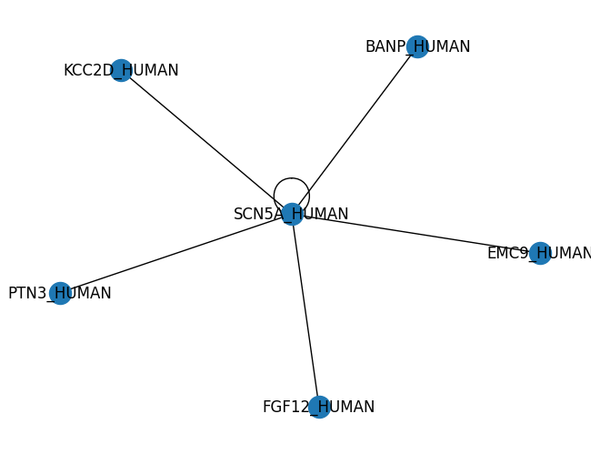

Use cytoscape
Use cytoscape#
import rdflib
from SPARQLWrapper import SPARQLWrapper, JSON, TURTLE
uniprot_query = """
PREFIX rdf: <http://www.w3.org/1999/02/22-rdf-syntax-ns#>
PREFIX rdfs:<http://www.w3.org/2000/01/rdf-schema#>
PREFIX owl: <http://www.w3.org/2002/07/owl#>
PREFIX xsd: <http://www.w3.org/2001/XMLSchema#>
PREFIX dc: <http://purl.org/dc/elements/1.1/>
PREFIX dcterms: <http://purl.org/dc/terms/>
PREFIX taxon: <http://purl.uniprot.org/taxonomy/>
PREFIX uniprot: <http://purl.uniprot.org/uniprot/>
PREFIX up:<http://purl.uniprot.org/core/>
SELECT * WHERE {
VALUES ?P1 {uniprot:Q14524}
?P1 up:mnemonic ?P1_label .
?P1 up:organism ?org .
?P1 up:interaction ?interaction .
?P2 up:interaction ?interaction .
?P2 up:mnemonic ?P2_label .
?interaction up:experiments ?nb_expe
# FILTER (?P2 != ?P1)
} limit 10
"""
sparql = SPARQLWrapper("http://sparql.uniprot.org/sparql/")
sparql.setQuery(uniprot_query)
sparql.setReturnFormat(JSON)
results = sparql.query().convert()
print(results['results']['bindings'])
list_of_genes = ["SCN5A"]
for r in results['results']['bindings']:
print(f"{r['P1_label']['value']} <-> {r['P2_label']['value']} in {r['nb_expe']['value']} experiments.")
# print(f"r")
list_of_genes.append(r['P2_label']['value'].split("_HUMAN")[0])
list_of_genes
[{'P1': {'type': 'uri', 'value': 'http://purl.uniprot.org/uniprot/Q14524'}, 'nb_expe': {'datatype': 'http://www.w3.org/2001/XMLSchema#int', 'type': 'literal', 'value': '3'}, 'P2': {'type': 'uri', 'value': 'http://purl.uniprot.org/uniprot/Q14524'}, 'org': {'type': 'uri', 'value': 'http://purl.uniprot.org/taxonomy/9606'}, 'P2_label': {'type': 'literal', 'value': 'SCN5A_HUMAN'}, 'interaction': {'type': 'uri', 'value': 'http://purl.uniprot.org/intact/11524452-14276801'}, 'P1_label': {'type': 'literal', 'value': 'SCN5A_HUMAN'}}, {'P1': {'type': 'uri', 'value': 'http://purl.uniprot.org/uniprot/Q14524'}, 'nb_expe': {'datatype': 'http://www.w3.org/2001/XMLSchema#int', 'type': 'literal', 'value': '3'}, 'P2': {'type': 'uri', 'value': 'http://purl.uniprot.org/uniprot/Q8N9N5'}, 'org': {'type': 'uri', 'value': 'http://purl.uniprot.org/taxonomy/9606'}, 'P2_label': {'type': 'literal', 'value': 'BANP_HUMAN'}, 'interaction': {'type': 'uri', 'value': 'http://purl.uniprot.org/intact/11524452-14276801'}, 'P1_label': {'type': 'literal', 'value': 'SCN5A_HUMAN'}}, {'P1': {'type': 'uri', 'value': 'http://purl.uniprot.org/uniprot/Q14524'}, 'nb_expe': {'datatype': 'http://www.w3.org/2001/XMLSchema#int', 'type': 'literal', 'value': '3'}, 'P2': {'type': 'uri', 'value': 'http://purl.uniprot.org/uniprot/Q9Y3B6'}, 'org': {'type': 'uri', 'value': 'http://purl.uniprot.org/taxonomy/9606'}, 'P2_label': {'type': 'literal', 'value': 'EMC9_HUMAN'}, 'interaction': {'type': 'uri', 'value': 'http://purl.uniprot.org/intact/748366-14276801'}, 'P1_label': {'type': 'literal', 'value': 'SCN5A_HUMAN'}}, {'P1': {'type': 'uri', 'value': 'http://purl.uniprot.org/uniprot/Q14524'}, 'nb_expe': {'datatype': 'http://www.w3.org/2001/XMLSchema#int', 'type': 'literal', 'value': '3'}, 'P2': {'type': 'uri', 'value': 'http://purl.uniprot.org/uniprot/Q14524'}, 'org': {'type': 'uri', 'value': 'http://purl.uniprot.org/taxonomy/9606'}, 'P2_label': {'type': 'literal', 'value': 'SCN5A_HUMAN'}, 'interaction': {'type': 'uri', 'value': 'http://purl.uniprot.org/intact/748366-14276801'}, 'P1_label': {'type': 'literal', 'value': 'SCN5A_HUMAN'}}, {'P1': {'type': 'uri', 'value': 'http://purl.uniprot.org/uniprot/Q14524'}, 'nb_expe': {'datatype': 'http://www.w3.org/2001/XMLSchema#int', 'type': 'literal', 'value': '4'}, 'P2': {'type': 'uri', 'value': 'http://purl.uniprot.org/uniprot/Q14524'}, 'org': {'type': 'uri', 'value': 'http://purl.uniprot.org/taxonomy/9606'}, 'P2_label': {'type': 'literal', 'value': 'SCN5A_HUMAN'}, 'interaction': {'type': 'uri', 'value': 'http://purl.uniprot.org/intact/726858-10699759'}, 'P1_label': {'type': 'literal', 'value': 'SCN5A_HUMAN'}}, {'P1': {'type': 'uri', 'value': 'http://purl.uniprot.org/uniprot/Q14524'}, 'nb_expe': {'datatype': 'http://www.w3.org/2001/XMLSchema#int', 'type': 'literal', 'value': '4'}, 'P2': {'type': 'uri', 'value': 'http://purl.uniprot.org/uniprot/P61328'}, 'org': {'type': 'uri', 'value': 'http://purl.uniprot.org/taxonomy/9606'}, 'P2_label': {'type': 'literal', 'value': 'FGF12_HUMAN'}, 'interaction': {'type': 'uri', 'value': 'http://purl.uniprot.org/intact/726858-10699759'}, 'P1_label': {'type': 'literal', 'value': 'SCN5A_HUMAN'}}, {'P1': {'type': 'uri', 'value': 'http://purl.uniprot.org/uniprot/Q14524'}, 'nb_expe': {'datatype': 'http://www.w3.org/2001/XMLSchema#int', 'type': 'literal', 'value': '16'}, 'P2': {'type': 'uri', 'value': 'http://purl.uniprot.org/uniprot/Q14524'}, 'org': {'type': 'uri', 'value': 'http://purl.uniprot.org/taxonomy/9606'}, 'P2_label': {'type': 'literal', 'value': 'SCN5A_HUMAN'}, 'interaction': {'type': 'uri', 'value': 'http://purl.uniprot.org/intact/351018-726858'}, 'P1_label': {'type': 'literal', 'value': 'SCN5A_HUMAN'}}, {'P1': {'type': 'uri', 'value': 'http://purl.uniprot.org/uniprot/Q14524'}, 'nb_expe': {'datatype': 'http://www.w3.org/2001/XMLSchema#int', 'type': 'literal', 'value': '16'}, 'P2': {'type': 'uri', 'value': 'http://purl.uniprot.org/uniprot/Q13557'}, 'org': {'type': 'uri', 'value': 'http://purl.uniprot.org/taxonomy/9606'}, 'P2_label': {'type': 'literal', 'value': 'KCC2D_HUMAN'}, 'interaction': {'type': 'uri', 'value': 'http://purl.uniprot.org/intact/351018-726858'}, 'P1_label': {'type': 'literal', 'value': 'SCN5A_HUMAN'}}, {'P1': {'type': 'uri', 'value': 'http://purl.uniprot.org/uniprot/Q14524'}, 'nb_expe': {'datatype': 'http://www.w3.org/2001/XMLSchema#int', 'type': 'literal', 'value': '2'}, 'P2': {'type': 'uri', 'value': 'http://purl.uniprot.org/uniprot/P26045'}, 'org': {'type': 'uri', 'value': 'http://purl.uniprot.org/taxonomy/9606'}, 'P2_label': {'type': 'literal', 'value': 'PTN3_HUMAN'}, 'interaction': {'type': 'uri', 'value': 'http://purl.uniprot.org/intact/726858-1047946'}, 'P1_label': {'type': 'literal', 'value': 'SCN5A_HUMAN'}}, {'P1': {'type': 'uri', 'value': 'http://purl.uniprot.org/uniprot/Q14524'}, 'nb_expe': {'datatype': 'http://www.w3.org/2001/XMLSchema#int', 'type': 'literal', 'value': '2'}, 'P2': {'type': 'uri', 'value': 'http://purl.uniprot.org/uniprot/Q14524'}, 'org': {'type': 'uri', 'value': 'http://purl.uniprot.org/taxonomy/9606'}, 'P2_label': {'type': 'literal', 'value': 'SCN5A_HUMAN'}, 'interaction': {'type': 'uri', 'value': 'http://purl.uniprot.org/intact/726858-1047946'}, 'P1_label': {'type': 'literal', 'value': 'SCN5A_HUMAN'}}]
SCN5A_HUMAN <-> SCN5A_HUMAN in 3 experiments.
SCN5A_HUMAN <-> BANP_HUMAN in 3 experiments.
SCN5A_HUMAN <-> EMC9_HUMAN in 3 experiments.
SCN5A_HUMAN <-> SCN5A_HUMAN in 3 experiments.
SCN5A_HUMAN <-> SCN5A_HUMAN in 4 experiments.
SCN5A_HUMAN <-> FGF12_HUMAN in 4 experiments.
SCN5A_HUMAN <-> SCN5A_HUMAN in 16 experiments.
SCN5A_HUMAN <-> KCC2D_HUMAN in 16 experiments.
SCN5A_HUMAN <-> PTN3_HUMAN in 2 experiments.
SCN5A_HUMAN <-> SCN5A_HUMAN in 2 experiments.
['SCN5A',
'SCN5A',
'BANP',
'EMC9',
'SCN5A',
'SCN5A',
'FGF12',
'SCN5A',
'KCC2D',
'PTN3',
'SCN5A']
import networkx as nx
from matplotlib import pyplot as plt
G = nx.Graph()
for r in results['results']['bindings']:
G.add_edge(r['P1_label']['value'], r['P2_label']['value'], nbExperiments = r['nb_expe']['value'])
nx.draw(G, with_labels= True)
plt.show()

nodes = []
edges = {}
# { 'data': { 'id': 'desktop', 'name': 'Cytoscape', 'href': 'http://cytoscape.org' } },
for r in results['results']['bindings']:
nodes.append({
'id' :
})
Cell In [4], line 6
'id' :
^
SyntaxError: expression expected after dictionary key and ':'
!pip install ipycytoscape
!pip install ipywidgets
Defaulting to user installation because normal site-packages is not writeable
Requirement already satisfied: ipycytoscape in /shared/ifbstor1/home/tdenecker/.local/lib/python3.9/site-packages (1.3.3)
Requirement already satisfied: ipywidgets>=7.6.0 in /shared/ifbstor1/software/jupyterhub/lib/python3.9/site-packages (from ipycytoscape) (7.6.5)
Requirement already satisfied: spectate>=1.0.0 in /shared/ifbstor1/home/tdenecker/.local/lib/python3.9/site-packages (from ipycytoscape) (1.0.1)
Requirement already satisfied: ipython>=4.0.0 in /shared/ifbstor1/software/jupyterhub/lib/python3.9/site-packages (from ipywidgets>=7.6.0->ipycytoscape) (7.29.0)
Requirement already satisfied: ipykernel>=4.5.1 in /shared/ifbstor1/software/jupyterhub/lib/python3.9/site-packages (from ipywidgets>=7.6.0->ipycytoscape) (6.4.2)
Requirement already satisfied: jupyterlab-widgets>=1.0.0 in /shared/ifbstor1/software/jupyterhub/lib/python3.9/site-packages (from ipywidgets>=7.6.0->ipycytoscape) (1.0.2)
Requirement already satisfied: traitlets>=4.3.1 in /shared/ifbstor1/software/jupyterhub/lib/python3.9/site-packages (from ipywidgets>=7.6.0->ipycytoscape) (5.1.1)
Requirement already satisfied: nbformat>=4.2.0 in /shared/ifbstor1/software/jupyterhub/lib/python3.9/site-packages (from ipywidgets>=7.6.0->ipycytoscape) (5.1.3)
Requirement already satisfied: widgetsnbextension~=3.5.0 in /shared/ifbstor1/software/jupyterhub/lib/python3.9/site-packages (from ipywidgets>=7.6.0->ipycytoscape) (3.5.2)
Requirement already satisfied: ipython-genutils~=0.2.0 in /shared/ifbstor1/software/jupyterhub/lib/python3.9/site-packages (from ipywidgets>=7.6.0->ipycytoscape) (0.2.0)
Requirement already satisfied: debugpy<2.0,>=1.0.0 in /shared/ifbstor1/software/jupyterhub/lib/python3.9/site-packages (from ipykernel>=4.5.1->ipywidgets>=7.6.0->ipycytoscape) (1.4.1)
Requirement already satisfied: tornado<7.0,>=4.2 in /shared/ifbstor1/software/jupyterhub/lib/python3.9/site-packages (from ipykernel>=4.5.1->ipywidgets>=7.6.0->ipycytoscape) (6.1)
Requirement already satisfied: jupyter-client<8.0 in /shared/ifbstor1/software/jupyterhub/lib/python3.9/site-packages (from ipykernel>=4.5.1->ipywidgets>=7.6.0->ipycytoscape) (7.0.6)
Requirement already satisfied: matplotlib-inline<0.2.0,>=0.1.0 in /shared/ifbstor1/software/jupyterhub/lib/python3.9/site-packages (from ipykernel>=4.5.1->ipywidgets>=7.6.0->ipycytoscape) (0.1.3)
Requirement already satisfied: backcall in /shared/ifbstor1/software/jupyterhub/lib/python3.9/site-packages (from ipython>=4.0.0->ipywidgets>=7.6.0->ipycytoscape) (0.2.0)
Requirement already satisfied: setuptools>=18.5 in /shared/ifbstor1/software/jupyterhub/lib/python3.9/site-packages (from ipython>=4.0.0->ipywidgets>=7.6.0->ipycytoscape) (58.4.0)
Requirement already satisfied: decorator in /shared/ifbstor1/software/jupyterhub/lib/python3.9/site-packages (from ipython>=4.0.0->ipywidgets>=7.6.0->ipycytoscape) (5.1.0)
Requirement already satisfied: pexpect>4.3 in /shared/ifbstor1/software/jupyterhub/lib/python3.9/site-packages (from ipython>=4.0.0->ipywidgets>=7.6.0->ipycytoscape) (4.8.0)
Requirement already satisfied: pygments in /shared/ifbstor1/software/jupyterhub/lib/python3.9/site-packages (from ipython>=4.0.0->ipywidgets>=7.6.0->ipycytoscape) (2.10.0)
Requirement already satisfied: jedi>=0.16 in /shared/ifbstor1/software/jupyterhub/lib/python3.9/site-packages (from ipython>=4.0.0->ipywidgets>=7.6.0->ipycytoscape) (0.18.0)
Requirement already satisfied: pickleshare in /shared/ifbstor1/software/jupyterhub/lib/python3.9/site-packages (from ipython>=4.0.0->ipywidgets>=7.6.0->ipycytoscape) (0.7.5)
Requirement already satisfied: prompt-toolkit!=3.0.0,!=3.0.1,<3.1.0,>=2.0.0 in /shared/ifbstor1/software/jupyterhub/lib/python3.9/site-packages (from ipython>=4.0.0->ipywidgets>=7.6.0->ipycytoscape) (3.0.21)
Requirement already satisfied: jsonschema!=2.5.0,>=2.4 in /shared/ifbstor1/software/jupyterhub/lib/python3.9/site-packages (from nbformat>=4.2.0->ipywidgets>=7.6.0->ipycytoscape) (4.1.2)
Requirement already satisfied: jupyter-core in /shared/ifbstor1/software/jupyterhub/lib/python3.9/site-packages (from nbformat>=4.2.0->ipywidgets>=7.6.0->ipycytoscape) (4.9.1)
Requirement already satisfied: notebook>=4.4.1 in /shared/ifbstor1/software/jupyterhub/lib/python3.9/site-packages (from widgetsnbextension~=3.5.0->ipywidgets>=7.6.0->ipycytoscape) (6.4.5)
Requirement already satisfied: parso<0.9.0,>=0.8.0 in /shared/ifbstor1/software/jupyterhub/lib/python3.9/site-packages (from jedi>=0.16->ipython>=4.0.0->ipywidgets>=7.6.0->ipycytoscape) (0.8.2)
Requirement already satisfied: pyrsistent!=0.17.0,!=0.17.1,!=0.17.2,>=0.14.0 in /shared/ifbstor1/software/jupyterhub/lib/python3.9/site-packages (from jsonschema!=2.5.0,>=2.4->nbformat>=4.2.0->ipywidgets>=7.6.0->ipycytoscape) (0.17.3)
Requirement already satisfied: attrs>=17.4.0 in /shared/ifbstor1/software/jupyterhub/lib/python3.9/site-packages (from jsonschema!=2.5.0,>=2.4->nbformat>=4.2.0->ipywidgets>=7.6.0->ipycytoscape) (21.2.0)
Requirement already satisfied: nest-asyncio>=1.5 in /shared/ifbstor1/software/jupyterhub/lib/python3.9/site-packages (from jupyter-client<8.0->ipykernel>=4.5.1->ipywidgets>=7.6.0->ipycytoscape) (1.5.1)
Requirement already satisfied: pyzmq>=13 in /shared/ifbstor1/software/jupyterhub/lib/python3.9/site-packages (from jupyter-client<8.0->ipykernel>=4.5.1->ipywidgets>=7.6.0->ipycytoscape) (22.3.0)
Requirement already satisfied: entrypoints in /shared/ifbstor1/software/jupyterhub/lib/python3.9/site-packages (from jupyter-client<8.0->ipykernel>=4.5.1->ipywidgets>=7.6.0->ipycytoscape) (0.3)
Requirement already satisfied: python-dateutil>=2.1 in /shared/ifbstor1/software/jupyterhub/lib/python3.9/site-packages (from jupyter-client<8.0->ipykernel>=4.5.1->ipywidgets>=7.6.0->ipycytoscape) (2.8.2)
Requirement already satisfied: nbconvert in /shared/ifbstor1/software/jupyterhub/lib/python3.9/site-packages (from notebook>=4.4.1->widgetsnbextension~=3.5.0->ipywidgets>=7.6.0->ipycytoscape) (6.2.0)
Requirement already satisfied: Send2Trash>=1.5.0 in /shared/ifbstor1/software/jupyterhub/lib/python3.9/site-packages (from notebook>=4.4.1->widgetsnbextension~=3.5.0->ipywidgets>=7.6.0->ipycytoscape) (1.8.0)
Requirement already satisfied: jinja2 in /shared/ifbstor1/software/jupyterhub/lib/python3.9/site-packages (from notebook>=4.4.1->widgetsnbextension~=3.5.0->ipywidgets>=7.6.0->ipycytoscape) (3.0.2)
Requirement already satisfied: prometheus-client in /shared/ifbstor1/software/jupyterhub/lib/python3.9/site-packages (from notebook>=4.4.1->widgetsnbextension~=3.5.0->ipywidgets>=7.6.0->ipycytoscape) (0.12.0)
Requirement already satisfied: terminado>=0.8.3 in /shared/ifbstor1/software/jupyterhub/lib/python3.9/site-packages (from notebook>=4.4.1->widgetsnbextension~=3.5.0->ipywidgets>=7.6.0->ipycytoscape) (0.12.1)
Requirement already satisfied: argon2-cffi in /shared/ifbstor1/software/jupyterhub/lib/python3.9/site-packages (from notebook>=4.4.1->widgetsnbextension~=3.5.0->ipywidgets>=7.6.0->ipycytoscape) (21.1.0)
Requirement already satisfied: ptyprocess>=0.5 in /shared/ifbstor1/software/jupyterhub/lib/python3.9/site-packages (from pexpect>4.3->ipython>=4.0.0->ipywidgets>=7.6.0->ipycytoscape) (0.7.0)
Requirement already satisfied: wcwidth in /shared/ifbstor1/software/jupyterhub/lib/python3.9/site-packages (from prompt-toolkit!=3.0.0,!=3.0.1,<3.1.0,>=2.0.0->ipython>=4.0.0->ipywidgets>=7.6.0->ipycytoscape) (0.2.5)
Requirement already satisfied: six>=1.5 in /shared/ifbstor1/software/jupyterhub/lib/python3.9/site-packages (from python-dateutil>=2.1->jupyter-client<8.0->ipykernel>=4.5.1->ipywidgets>=7.6.0->ipycytoscape) (1.16.0)
Requirement already satisfied: cffi>=1.0.0 in /shared/ifbstor1/software/jupyterhub/lib/python3.9/site-packages (from argon2-cffi->notebook>=4.4.1->widgetsnbextension~=3.5.0->ipywidgets>=7.6.0->ipycytoscape) (1.14.6)
Requirement already satisfied: MarkupSafe>=2.0 in /shared/ifbstor1/software/jupyterhub/lib/python3.9/site-packages (from jinja2->notebook>=4.4.1->widgetsnbextension~=3.5.0->ipywidgets>=7.6.0->ipycytoscape) (2.0.1)
Requirement already satisfied: testpath in /shared/ifbstor1/software/jupyterhub/lib/python3.9/site-packages (from nbconvert->notebook>=4.4.1->widgetsnbextension~=3.5.0->ipywidgets>=7.6.0->ipycytoscape) (0.5.0)
Requirement already satisfied: bleach in /shared/ifbstor1/software/jupyterhub/lib/python3.9/site-packages (from nbconvert->notebook>=4.4.1->widgetsnbextension~=3.5.0->ipywidgets>=7.6.0->ipycytoscape) (4.1.0)
Requirement already satisfied: pandocfilters>=1.4.1 in /shared/ifbstor1/software/jupyterhub/lib/python3.9/site-packages (from nbconvert->notebook>=4.4.1->widgetsnbextension~=3.5.0->ipywidgets>=7.6.0->ipycytoscape) (1.5.0)
Requirement already satisfied: nbclient<0.6.0,>=0.5.0 in /shared/ifbstor1/software/jupyterhub/lib/python3.9/site-packages (from nbconvert->notebook>=4.4.1->widgetsnbextension~=3.5.0->ipywidgets>=7.6.0->ipycytoscape) (0.5.4)
Requirement already satisfied: jupyterlab-pygments in /shared/ifbstor1/software/jupyterhub/lib/python3.9/site-packages (from nbconvert->notebook>=4.4.1->widgetsnbextension~=3.5.0->ipywidgets>=7.6.0->ipycytoscape) (0.1.2)
Requirement already satisfied: mistune<2,>=0.8.1 in /shared/ifbstor1/software/jupyterhub/lib/python3.9/site-packages (from nbconvert->notebook>=4.4.1->widgetsnbextension~=3.5.0->ipywidgets>=7.6.0->ipycytoscape) (0.8.4)
Requirement already satisfied: defusedxml in /shared/ifbstor1/software/jupyterhub/lib/python3.9/site-packages (from nbconvert->notebook>=4.4.1->widgetsnbextension~=3.5.0->ipywidgets>=7.6.0->ipycytoscape) (0.7.1)
Requirement already satisfied: pycparser in /shared/ifbstor1/software/jupyterhub/lib/python3.9/site-packages (from cffi>=1.0.0->argon2-cffi->notebook>=4.4.1->widgetsnbextension~=3.5.0->ipywidgets>=7.6.0->ipycytoscape) (2.20)
Requirement already satisfied: packaging in /shared/ifbstor1/software/jupyterhub/lib/python3.9/site-packages (from bleach->nbconvert->notebook>=4.4.1->widgetsnbextension~=3.5.0->ipywidgets>=7.6.0->ipycytoscape) (21.0)
Requirement already satisfied: webencodings in /shared/ifbstor1/software/jupyterhub/lib/python3.9/site-packages (from bleach->nbconvert->notebook>=4.4.1->widgetsnbextension~=3.5.0->ipywidgets>=7.6.0->ipycytoscape) (0.5.1)
Requirement already satisfied: pyparsing>=2.0.2 in /shared/ifbstor1/software/jupyterhub/lib/python3.9/site-packages (from packaging->bleach->nbconvert->notebook>=4.4.1->widgetsnbextension~=3.5.0->ipywidgets>=7.6.0->ipycytoscape) (3.0.4)
Defaulting to user installation because normal site-packages is not writeable
Requirement already satisfied: ipywidgets in /shared/ifbstor1/software/jupyterhub/lib/python3.9/site-packages (7.6.5)
Requirement already satisfied: ipykernel>=4.5.1 in /shared/ifbstor1/software/jupyterhub/lib/python3.9/site-packages (from ipywidgets) (6.4.2)
Requirement already satisfied: traitlets>=4.3.1 in /shared/ifbstor1/software/jupyterhub/lib/python3.9/site-packages (from ipywidgets) (5.1.1)
Requirement already satisfied: jupyterlab-widgets>=1.0.0 in /shared/ifbstor1/software/jupyterhub/lib/python3.9/site-packages (from ipywidgets) (1.0.2)
Requirement already satisfied: nbformat>=4.2.0 in /shared/ifbstor1/software/jupyterhub/lib/python3.9/site-packages (from ipywidgets) (5.1.3)
Requirement already satisfied: widgetsnbextension~=3.5.0 in /shared/ifbstor1/software/jupyterhub/lib/python3.9/site-packages (from ipywidgets) (3.5.2)
Requirement already satisfied: ipython-genutils~=0.2.0 in /shared/ifbstor1/software/jupyterhub/lib/python3.9/site-packages (from ipywidgets) (0.2.0)
Requirement already satisfied: ipython>=4.0.0 in /shared/ifbstor1/software/jupyterhub/lib/python3.9/site-packages (from ipywidgets) (7.29.0)
Requirement already satisfied: tornado<7.0,>=4.2 in /shared/ifbstor1/software/jupyterhub/lib/python3.9/site-packages (from ipykernel>=4.5.1->ipywidgets) (6.1)
Requirement already satisfied: matplotlib-inline<0.2.0,>=0.1.0 in /shared/ifbstor1/software/jupyterhub/lib/python3.9/site-packages (from ipykernel>=4.5.1->ipywidgets) (0.1.3)
Requirement already satisfied: jupyter-client<8.0 in /shared/ifbstor1/software/jupyterhub/lib/python3.9/site-packages (from ipykernel>=4.5.1->ipywidgets) (7.0.6)
Requirement already satisfied: debugpy<2.0,>=1.0.0 in /shared/ifbstor1/software/jupyterhub/lib/python3.9/site-packages (from ipykernel>=4.5.1->ipywidgets) (1.4.1)
Requirement already satisfied: jedi>=0.16 in /shared/ifbstor1/software/jupyterhub/lib/python3.9/site-packages (from ipython>=4.0.0->ipywidgets) (0.18.0)
Requirement already satisfied: pexpect>4.3 in /shared/ifbstor1/software/jupyterhub/lib/python3.9/site-packages (from ipython>=4.0.0->ipywidgets) (4.8.0)
Requirement already satisfied: pygments in /shared/ifbstor1/software/jupyterhub/lib/python3.9/site-packages (from ipython>=4.0.0->ipywidgets) (2.10.0)
Requirement already satisfied: backcall in /shared/ifbstor1/software/jupyterhub/lib/python3.9/site-packages (from ipython>=4.0.0->ipywidgets) (0.2.0)
Requirement already satisfied: setuptools>=18.5 in /shared/ifbstor1/software/jupyterhub/lib/python3.9/site-packages (from ipython>=4.0.0->ipywidgets) (58.4.0)
Requirement already satisfied: prompt-toolkit!=3.0.0,!=3.0.1,<3.1.0,>=2.0.0 in /shared/ifbstor1/software/jupyterhub/lib/python3.9/site-packages (from ipython>=4.0.0->ipywidgets) (3.0.21)
Requirement already satisfied: decorator in /shared/ifbstor1/software/jupyterhub/lib/python3.9/site-packages (from ipython>=4.0.0->ipywidgets) (5.1.0)
Requirement already satisfied: pickleshare in /shared/ifbstor1/software/jupyterhub/lib/python3.9/site-packages (from ipython>=4.0.0->ipywidgets) (0.7.5)
Requirement already satisfied: jsonschema!=2.5.0,>=2.4 in /shared/ifbstor1/software/jupyterhub/lib/python3.9/site-packages (from nbformat>=4.2.0->ipywidgets) (4.1.2)
Requirement already satisfied: jupyter-core in /shared/ifbstor1/software/jupyterhub/lib/python3.9/site-packages (from nbformat>=4.2.0->ipywidgets) (4.9.1)
Requirement already satisfied: notebook>=4.4.1 in /shared/ifbstor1/software/jupyterhub/lib/python3.9/site-packages (from widgetsnbextension~=3.5.0->ipywidgets) (6.4.5)
Requirement already satisfied: parso<0.9.0,>=0.8.0 in /shared/ifbstor1/software/jupyterhub/lib/python3.9/site-packages (from jedi>=0.16->ipython>=4.0.0->ipywidgets) (0.8.2)
Requirement already satisfied: attrs>=17.4.0 in /shared/ifbstor1/software/jupyterhub/lib/python3.9/site-packages (from jsonschema!=2.5.0,>=2.4->nbformat>=4.2.0->ipywidgets) (21.2.0)
Requirement already satisfied: pyrsistent!=0.17.0,!=0.17.1,!=0.17.2,>=0.14.0 in /shared/ifbstor1/software/jupyterhub/lib/python3.9/site-packages (from jsonschema!=2.5.0,>=2.4->nbformat>=4.2.0->ipywidgets) (0.17.3)
Requirement already satisfied: nest-asyncio>=1.5 in /shared/ifbstor1/software/jupyterhub/lib/python3.9/site-packages (from jupyter-client<8.0->ipykernel>=4.5.1->ipywidgets) (1.5.1)
Requirement already satisfied: entrypoints in /shared/ifbstor1/software/jupyterhub/lib/python3.9/site-packages (from jupyter-client<8.0->ipykernel>=4.5.1->ipywidgets) (0.3)
Requirement already satisfied: python-dateutil>=2.1 in /shared/ifbstor1/software/jupyterhub/lib/python3.9/site-packages (from jupyter-client<8.0->ipykernel>=4.5.1->ipywidgets) (2.8.2)
Requirement already satisfied: pyzmq>=13 in /shared/ifbstor1/software/jupyterhub/lib/python3.9/site-packages (from jupyter-client<8.0->ipykernel>=4.5.1->ipywidgets) (22.3.0)
Requirement already satisfied: nbconvert in /shared/ifbstor1/software/jupyterhub/lib/python3.9/site-packages (from notebook>=4.4.1->widgetsnbextension~=3.5.0->ipywidgets) (6.2.0)
Requirement already satisfied: terminado>=0.8.3 in /shared/ifbstor1/software/jupyterhub/lib/python3.9/site-packages (from notebook>=4.4.1->widgetsnbextension~=3.5.0->ipywidgets) (0.12.1)
Requirement already satisfied: Send2Trash>=1.5.0 in /shared/ifbstor1/software/jupyterhub/lib/python3.9/site-packages (from notebook>=4.4.1->widgetsnbextension~=3.5.0->ipywidgets) (1.8.0)
Requirement already satisfied: jinja2 in /shared/ifbstor1/software/jupyterhub/lib/python3.9/site-packages (from notebook>=4.4.1->widgetsnbextension~=3.5.0->ipywidgets) (3.0.2)
Requirement already satisfied: prometheus-client in /shared/ifbstor1/software/jupyterhub/lib/python3.9/site-packages (from notebook>=4.4.1->widgetsnbextension~=3.5.0->ipywidgets) (0.12.0)
Requirement already satisfied: argon2-cffi in /shared/ifbstor1/software/jupyterhub/lib/python3.9/site-packages (from notebook>=4.4.1->widgetsnbextension~=3.5.0->ipywidgets) (21.1.0)
Requirement already satisfied: ptyprocess>=0.5 in /shared/ifbstor1/software/jupyterhub/lib/python3.9/site-packages (from pexpect>4.3->ipython>=4.0.0->ipywidgets) (0.7.0)
Requirement already satisfied: wcwidth in /shared/ifbstor1/software/jupyterhub/lib/python3.9/site-packages (from prompt-toolkit!=3.0.0,!=3.0.1,<3.1.0,>=2.0.0->ipython>=4.0.0->ipywidgets) (0.2.5)
Requirement already satisfied: six>=1.5 in /shared/ifbstor1/software/jupyterhub/lib/python3.9/site-packages (from python-dateutil>=2.1->jupyter-client<8.0->ipykernel>=4.5.1->ipywidgets) (1.16.0)
Requirement already satisfied: cffi>=1.0.0 in /shared/ifbstor1/software/jupyterhub/lib/python3.9/site-packages (from argon2-cffi->notebook>=4.4.1->widgetsnbextension~=3.5.0->ipywidgets) (1.14.6)
Requirement already satisfied: MarkupSafe>=2.0 in /shared/ifbstor1/software/jupyterhub/lib/python3.9/site-packages (from jinja2->notebook>=4.4.1->widgetsnbextension~=3.5.0->ipywidgets) (2.0.1)
Requirement already satisfied: bleach in /shared/ifbstor1/software/jupyterhub/lib/python3.9/site-packages (from nbconvert->notebook>=4.4.1->widgetsnbextension~=3.5.0->ipywidgets) (4.1.0)
Requirement already satisfied: nbclient<0.6.0,>=0.5.0 in /shared/ifbstor1/software/jupyterhub/lib/python3.9/site-packages (from nbconvert->notebook>=4.4.1->widgetsnbextension~=3.5.0->ipywidgets) (0.5.4)
Requirement already satisfied: jupyterlab-pygments in /shared/ifbstor1/software/jupyterhub/lib/python3.9/site-packages (from nbconvert->notebook>=4.4.1->widgetsnbextension~=3.5.0->ipywidgets) (0.1.2)
Requirement already satisfied: testpath in /shared/ifbstor1/software/jupyterhub/lib/python3.9/site-packages (from nbconvert->notebook>=4.4.1->widgetsnbextension~=3.5.0->ipywidgets) (0.5.0)
Requirement already satisfied: mistune<2,>=0.8.1 in /shared/ifbstor1/software/jupyterhub/lib/python3.9/site-packages (from nbconvert->notebook>=4.4.1->widgetsnbextension~=3.5.0->ipywidgets) (0.8.4)
Requirement already satisfied: defusedxml in /shared/ifbstor1/software/jupyterhub/lib/python3.9/site-packages (from nbconvert->notebook>=4.4.1->widgetsnbextension~=3.5.0->ipywidgets) (0.7.1)
Requirement already satisfied: pandocfilters>=1.4.1 in /shared/ifbstor1/software/jupyterhub/lib/python3.9/site-packages (from nbconvert->notebook>=4.4.1->widgetsnbextension~=3.5.0->ipywidgets) (1.5.0)
Requirement already satisfied: pycparser in /shared/ifbstor1/software/jupyterhub/lib/python3.9/site-packages (from cffi>=1.0.0->argon2-cffi->notebook>=4.4.1->widgetsnbextension~=3.5.0->ipywidgets) (2.20)
Requirement already satisfied: webencodings in /shared/ifbstor1/software/jupyterhub/lib/python3.9/site-packages (from bleach->nbconvert->notebook>=4.4.1->widgetsnbextension~=3.5.0->ipywidgets) (0.5.1)
Requirement already satisfied: packaging in /shared/ifbstor1/software/jupyterhub/lib/python3.9/site-packages (from bleach->nbconvert->notebook>=4.4.1->widgetsnbextension~=3.5.0->ipywidgets) (21.0)
Requirement already satisfied: pyparsing>=2.0.2 in /shared/ifbstor1/software/jupyterhub/lib/python3.9/site-packages (from packaging->bleach->nbconvert->notebook>=4.4.1->widgetsnbextension~=3.5.0->ipywidgets) (3.0.4)
import ipycytoscape
import ipywidgets as widgets
cytoscapeobj = ipycytoscape.CytoscapeWidget()
cytoscapeobj.graph.add_graph_from_networkx(G)
cytoscapeobj.graph.nodes
[Node(data={'id': '0'}, position={}),
Node(data={'id': '1'}, position={}),
Node(data={'id': '2'}, position={}),
Node(data={'id': '3'}, position={}),
Node(data={'id': '4'}, position={})]
cytoscapeobj.set_style([{
'selector': 'node',
'css': {
'content': 'data(name)',
'text-valign': 'center',
'color': 'white',
'text-outline-width': 2,
'text-outline-color': 'green',
'background-color': 'green'
}
},
{
'selector': ':selected',
'css': {
'background-color': 'black',
'line-color': 'black',
'target-arrow-color': 'black',
'source-arrow-color': 'black',
'text-outline-color': 'black'
}}
])
cytoscapeobj
---------------------------------------------------------------------------
NameError Traceback (most recent call last)
Cell In[3], line 1
----> 1 cytoscapeobj.set_style([{
2 'selector': 'node',
3 'css': {
4 'content': 'data(name)',
5 'text-valign': 'center',
6 'color': 'white',
7 'text-outline-width': 2,
8 'text-outline-color': 'green',
9 'background-color': 'green'
10 }
11 },
12 {
13 'selector': ':selected',
14 'css': {
15 'background-color': 'black',
16 'line-color': 'black',
17 'target-arrow-color': 'black',
18 'source-arrow-color': 'black',
19 'text-outline-color': 'black'
20 }}
21 ])
22 cytoscapeobj
NameError: name 'cytoscapeobj' is not defined
!pip install ipywidgets --upgrade
from ipycytoscape import CytoscapeWidget
import networkx as nx
G = nx.complete_graph(5)
cyto = CytoscapeWidget()
cyto.graph.add_graph_from_networkx(G)
display(cyto)
Defaulting to user installation because normal site-packages is not writeable
Requirement already satisfied: ipywidgets in /shared/ifbstor1/home/tdenecker/.local/lib/python3.9/site-packages (8.0.4)
Requirement already satisfied: ipython>=6.1.0 in /shared/ifbstor1/software/jupyterhub/lib/python3.9/site-packages (from ipywidgets) (7.29.0)
Requirement already satisfied: widgetsnbextension~=4.0 in /shared/ifbstor1/home/tdenecker/.local/lib/python3.9/site-packages (from ipywidgets) (4.0.5)
Requirement already satisfied: ipykernel>=4.5.1 in /shared/ifbstor1/software/jupyterhub/lib/python3.9/site-packages (from ipywidgets) (6.4.2)
Requirement already satisfied: traitlets>=4.3.1 in /shared/ifbstor1/software/jupyterhub/lib/python3.9/site-packages (from ipywidgets) (5.1.1)
Requirement already satisfied: jupyterlab-widgets~=3.0 in /shared/ifbstor1/home/tdenecker/.local/lib/python3.9/site-packages (from ipywidgets) (3.0.5)
Requirement already satisfied: debugpy<2.0,>=1.0.0 in /shared/ifbstor1/software/jupyterhub/lib/python3.9/site-packages (from ipykernel>=4.5.1->ipywidgets) (1.4.1)
Requirement already satisfied: tornado<7.0,>=4.2 in /shared/ifbstor1/software/jupyterhub/lib/python3.9/site-packages (from ipykernel>=4.5.1->ipywidgets) (6.1)
Requirement already satisfied: matplotlib-inline<0.2.0,>=0.1.0 in /shared/ifbstor1/software/jupyterhub/lib/python3.9/site-packages (from ipykernel>=4.5.1->ipywidgets) (0.1.3)
Requirement already satisfied: ipython-genutils in /shared/ifbstor1/software/jupyterhub/lib/python3.9/site-packages (from ipykernel>=4.5.1->ipywidgets) (0.2.0)
Requirement already satisfied: jupyter-client<8.0 in /shared/ifbstor1/software/jupyterhub/lib/python3.9/site-packages (from ipykernel>=4.5.1->ipywidgets) (7.0.6)
Requirement already satisfied: setuptools>=18.5 in /shared/ifbstor1/software/jupyterhub/lib/python3.9/site-packages (from ipython>=6.1.0->ipywidgets) (58.4.0)
Requirement already satisfied: backcall in /shared/ifbstor1/software/jupyterhub/lib/python3.9/site-packages (from ipython>=6.1.0->ipywidgets) (0.2.0)
Requirement already satisfied: pygments in /shared/ifbstor1/software/jupyterhub/lib/python3.9/site-packages (from ipython>=6.1.0->ipywidgets) (2.10.0)
Requirement already satisfied: jedi>=0.16 in /shared/ifbstor1/software/jupyterhub/lib/python3.9/site-packages (from ipython>=6.1.0->ipywidgets) (0.18.0)
Requirement already satisfied: pexpect>4.3 in /shared/ifbstor1/software/jupyterhub/lib/python3.9/site-packages (from ipython>=6.1.0->ipywidgets) (4.8.0)
Requirement already satisfied: pickleshare in /shared/ifbstor1/software/jupyterhub/lib/python3.9/site-packages (from ipython>=6.1.0->ipywidgets) (0.7.5)
Requirement already satisfied: prompt-toolkit!=3.0.0,!=3.0.1,<3.1.0,>=2.0.0 in /shared/ifbstor1/software/jupyterhub/lib/python3.9/site-packages (from ipython>=6.1.0->ipywidgets) (3.0.21)
Requirement already satisfied: decorator in /shared/ifbstor1/software/jupyterhub/lib/python3.9/site-packages (from ipython>=6.1.0->ipywidgets) (5.1.0)
Requirement already satisfied: parso<0.9.0,>=0.8.0 in /shared/ifbstor1/software/jupyterhub/lib/python3.9/site-packages (from jedi>=0.16->ipython>=6.1.0->ipywidgets) (0.8.2)
Requirement already satisfied: entrypoints in /shared/ifbstor1/software/jupyterhub/lib/python3.9/site-packages (from jupyter-client<8.0->ipykernel>=4.5.1->ipywidgets) (0.3)
Requirement already satisfied: pyzmq>=13 in /shared/ifbstor1/software/jupyterhub/lib/python3.9/site-packages (from jupyter-client<8.0->ipykernel>=4.5.1->ipywidgets) (22.3.0)
Requirement already satisfied: python-dateutil>=2.1 in /shared/ifbstor1/software/jupyterhub/lib/python3.9/site-packages (from jupyter-client<8.0->ipykernel>=4.5.1->ipywidgets) (2.8.2)
Requirement already satisfied: nest-asyncio>=1.5 in /shared/ifbstor1/software/jupyterhub/lib/python3.9/site-packages (from jupyter-client<8.0->ipykernel>=4.5.1->ipywidgets) (1.5.1)
Requirement already satisfied: jupyter-core>=4.6.0 in /shared/ifbstor1/software/jupyterhub/lib/python3.9/site-packages (from jupyter-client<8.0->ipykernel>=4.5.1->ipywidgets) (4.9.1)
Requirement already satisfied: ptyprocess>=0.5 in /shared/ifbstor1/software/jupyterhub/lib/python3.9/site-packages (from pexpect>4.3->ipython>=6.1.0->ipywidgets) (0.7.0)
Requirement already satisfied: wcwidth in /shared/ifbstor1/software/jupyterhub/lib/python3.9/site-packages (from prompt-toolkit!=3.0.0,!=3.0.1,<3.1.0,>=2.0.0->ipython>=6.1.0->ipywidgets) (0.2.5)
Requirement already satisfied: six>=1.5 in /shared/ifbstor1/software/jupyterhub/lib/python3.9/site-packages (from python-dateutil>=2.1->jupyter-client<8.0->ipykernel>=4.5.1->ipywidgets) (1.16.0)